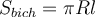
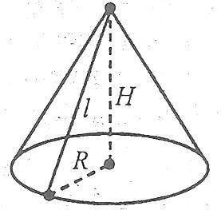
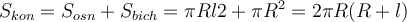
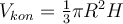
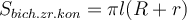
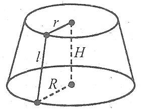
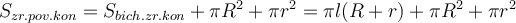
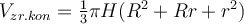

Площі поверхонь та об'єми тіл обертання
Площі поверхонь та об'єми тіл обертання


2) Формули площі поверхні та об'єму конуса
Площа бічної поверхні конуса дорівнює півдобутку довжини кола основи на його твірну, тобто
.

Площа повної поверхні конуса дорівнює сумі площ бічної поверхні і площі основи:
.
Об’єм конуса дорівнює третині добутку площі основи на висоту конуса, тобто
.
Площа бічної поверхні зрізаного конуса дорівнює півдобутку суми довжин кіл основ на довжину твірної, тобто
,
де l – твірна, R і r – радіуси основ.

Площа повної поверхні зрізаного конуса дорівнює сумі площі бічної поверхні і площ основ:
.
Об’єм зрізаного конуса обчислюється за формулою:
,
де R і r – радіуси основ, Н – висота конуса.